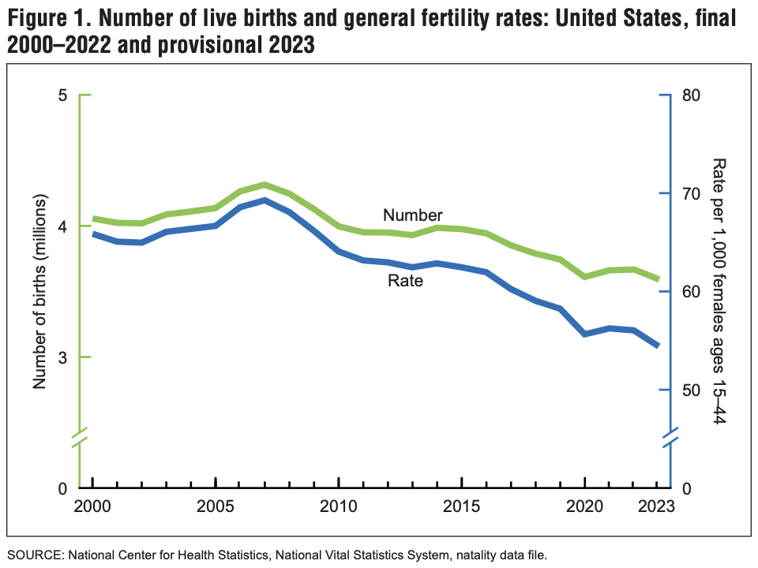

Fur babies must be stopped for the future of our regular babies.
Dogs are the shit nowadays. Cats still kinda suck but for fairness and to keep you reading I'll also say they are pretty cool. Everyone seems to have a pet—the people around my apartment complex, the people walking on trails, the people sitting outside coffee shops. Pets are in.
And it's not just owning a pet that's in. It's accessorizing them. Swagging them out. Making them drip. A coworker once mentioned to me about how their weekend was going to be filled with taking their dog to various shops around town to try on different clothes and shoes. At this point it hit me: this person probably considered their dog to be their child.
The purpose of this essay is not to ridicule pet owners who treat their pets like their beloved children, but rather argue that people who are concerned with the declining birth rate in the United States should be concerned about the increasing pet ownership rates.
Total fertility rate (TFR) is the average number of children a woman would have in her lifetime if she followed the current age-specific birth rates throughout her childbearing years. The NVSS (National Vital Statistic System) regularly publishes birth data. Their most recent general publication, Births: Provisional Data for 2023 gives the following statistics (bulletized by me for readibility):
- The provisional number of births for the United States in 2023 was 3,591,328, down 2% from 2022.
- The general fertility rate was 54.4 births per 1,000 females ages 15–44, down 3% from 2022.
- The total fertility rate was 1,616.5 births per 1,000 women in 2023, a decline of 2% from 2022.
The graph also shows TFR to be dropping consistently since 2005, except for a [quantity unknown] increase from 2013-2014 and 1% increase from 2020-2021:

Anecdotally speaking, owner involvement in pets has been increasing steadily over the years (or I'm now just surrounded by more involved pet owners). This includes more clothing, more grooming, more going places, etc. Since anecdotes mean nothing, let's look at what the data shows.
The AVMA published Preliminary results from 2024 AVMA Pet Ownership and Demographic survey and found that "pet population continues to increase while pet spending [related to veternarian care] declines". Unfortunately, it's paywalled, so we'll have to settle for their 2022 Pet Ownership and Demographics Sourcebook. (I am doubtful a significant amount has changed in the past two years, but who knows.)
Some highlights:
Dog ownership increased by 6% from 38.4% (2016) to 44.6% (2020) ... It’s important to note these are estimates based on a sample size of 2,000.
Comparing 2020 to 2016*, rates of pet ownership were 11% higher for those making more than $75,000 and were 25% higher for people living in a house
Households with incomes over $100,000 were most likely to own pets [63% vs. 35-59% for lower income households; ownership rates trend down with income level]
People in the 25–54 age group were most likely to be pet owners. 35-44-year-olds had the highest rate of ownership at 75%.
[regarding types of pet owners and their demographics] Pampered pets ... Single, no kids ... Under 35 or 45-54 years old ... 96% considered the pet part of their family ...
Each segment differs in how they care for pets. Pampered pets and enthusiastic families were the most likely to be highly involved in their pets’ lives. This includes celebrating birthdays, holidays, talking to their pet daily, and dressing their pet in fashionable clothing and/or accessories.
Pampered pet owners were close to top dog (get it?) in every behavior category: giving them food scraps, celebrating their birthday, celebrating holidays together, taking them out in public, leaving the TV on for them to watch, dressing them up, putting them in one's will, and taking them to daycare. Pets didn't always get these luxuries, but children sure did!
Yeah, yeah, correlation doesn't imply causation and all that jazz. Since this is a mostly-joking-but-not-entirely piece, I'll do a cursory search of the literature.
Guo et al.'s Can Pets Replace Children? The Interaction Effect of Pet Attachment and Subjective Socioeconomic Status on Fertility Intention found that:
pet attachment was negatively associated with fertility intention when individuals had a high level of subjective SES, whereas this effect disappeared when individuals had low subjective SES. These findings suggest an explanation for why individuals with high subjective SES delay or even opt out of childbearing.
n = 1.
The Institute for Family Studies found that:
there probably are two separate connections between fertility and pet ownership: rising pet ownership may be replacing single-motherhood to some extent, but more prominently, young people are pushed by many factors to delay marriage, and so spend more years in singleness, without reliable companionship. As a result, they invest—often expensively so—in a truly reliable companion: a pet.
n = 1.5ish.
That's enough evidence for me. Onto the speculation.
Pets make people less likely to want kids for the following reasons.
Owning a pet can cost a lot of time, money, and freedom. Feeding, cleaning, walking, caring, and so on. Pet owners spent $1500 annually. Google Gemini claims owners spend 45 minutes a day with their pets, while other sources estimate up to 90 minutes. Owners often think about their pets when they're away.
All of this potentially leads the owner to think: why should I get another cost in my life? Now sure, we're most definitely biologically programmed to want children, no arguing that. But biological programming can be outgunned by a combination of a) feeling we already have a child (AKA Rex the Dog), and b) the cost of realizing this programming, i.e., the cost-benefit of actually having and raising a child.
So what happens when Alice gets a dog straight out of school and isn't super interested in dating? She starts to view this dog as her child, and as a result is less likely (by however much) to want kids. (I admit there certainly exists a person who want a kid even more after caring for a pet, as if they consider Rex their warm-up into parenthood. But it appears to me these are much fewer in numbers than those choosing animal over human.)
While this explanation is most definitely not backed up by any sort of data, it seems plausible to me that one advantage of pets is their selectability. Potential owners can pick and choose based on apperance, temperament, size, breed, and a host of other traits. And while they still can to some extent with their kids by choosing their partner accordingly, it is much more limited because that super smart, tall, good-looking guy may not be interested in poor Alice. Brad the Border Collie—the super smart, athletic, good-looking dog—doesn't care what Alice looks like, he's just happy to get some belly rubs and toys.
First, lower the cost of having kids or advertise how low cost having kids is (see Caplan's arguments in Selfish Reasons to Have More Kids. (Increasing the cost of having pets is another option, but feels wrong.)
Second, make kids more customizable. Yes, polygenic screening should be encouraged and allowed. Remove the fear of getting a crappy baby.